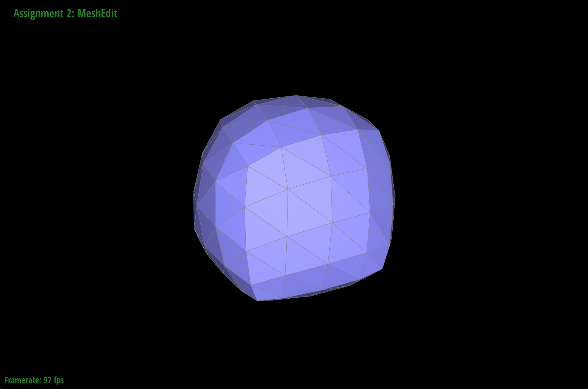

Overview
In this homework, I implemented a mesh editor that would allow me to visualize and edit 2D/3D mesh using core concepts from computer graphics such as Bezier curves and de Casteljau's algorithm. Doing this homework taught me more about how exactly mesh is rendered to get smoother vs sharper shapes. Upsampling also showed me how meshes can increase their resolution.
Section I: Bezier Curves and Surfaces
Part 1: Bezier curves with 1D de Casteljau subdivision
de Casteljau’s algorithm works by using linear interpolation to create intermediate points between all connected points. Then, we continue to recursively calculate intermediate points for our intermediate points until we only have one point left. This last point goes on the Bezier curve. I implemented this by writing code to calculate the set of intermediate points given a vector of points using the given equation.

|
Part 2: Bezier surfaces with separable 1D de Casteljau
The de Casteljau algorithm for Bezier surfaces essentially computes the de Casteljau algorithm for two dimensions rather than just one with Bezier curves. I implemented this by writing functions for the recursive step in one dimension and using that function to write another function which would fully perform the de Casteljau algorithm in one dimension. Then, I used the full 1D function to calculate the Bezier curves for n sets of points and get 1 set of points. This 1 set of points was used to compute the algorithm in the second dimension.
Section II: Triangle Meshes and Half-Edge Data Structure
Part 3: Area-weighted vertex normals
In my implementation, I started by creating a loop through all the neighboring triangles via halfedges. For the triangle that I was iterating over, I calculated the area-weighted norm and added it to a total. Once I finished iterating and had my total, I just normalized the sum and returned it. This area-weighted vertex norm is then used to implement Phong shading.

|
Part 4: Edge flip
I implemented the edge flip operation by first saving any mesh element that I thought would be changed by the flip operation. Then, I drew out how exactly I wanted to move halfedges and drew out all references between the halfedges to figure out what exactly I still needed to update. Looking at the half-edge data structure slide from lecture 8 helped out a lot.

|
Part 5: Edge split
I implemented edge splitting by having a well-drawn out diagram to organize the relationship between halfedges and other mesh elements. I also made sure to update every field and every mesh element.
One issue I ran into was that only one of my triangles in the split was appearing correctly while two vanished and one was black. I didn’t know why this was happening until I hovered over the black triangle to see that it still had halfedges, but the halfedges were in clockwise orientation rather than CCW. This immediately told me to recheck my diagram, and I realized that I had accidentally flipped two halfedges in my diagram. Once I realized this, I was immediately able to fix my issue.
I did not provide edge split support for boundary edges.
Part 6: Loop subdivision for mesh upsampling
I implemented loop subdivision by carefully following the given algorithm. I also thought about what elements needed to be updated such as the positions of the vertices. I was initially struggling because some of my faces were vanishing, but I figured out my issue was because there was a specific new edge being created by the split algorithm that should not have been flipped.
|  |
Based on my observations, sharp corners and edges become smoother as I continue to undergo loop subdivision. Some sharp corners are still noticeable though after several iterations of loop subdivision. I do think that pre-splitting edges could reduce the noticeability of sharp corners because areas with smaller triangles and more edges typically tend to be smoother.
I was able to get the cube to divide symmetrically which I did by splitting all the faces so that each face of the cube initially had four triangles. This made me come to the conclusion that the cube is much more likely to be more symmetric if the mesh that I am performing loop subdivision on is already symmetric when looking at the edges and triangles. Pre-processing helps alleviate the problem of asymmetry because pre-processing allows us to make the mesh symmetric before we perform loop subdivision.
I have not implemented any extra credit features.
Section III: Art Competition
I did not participate in the art competition. :(